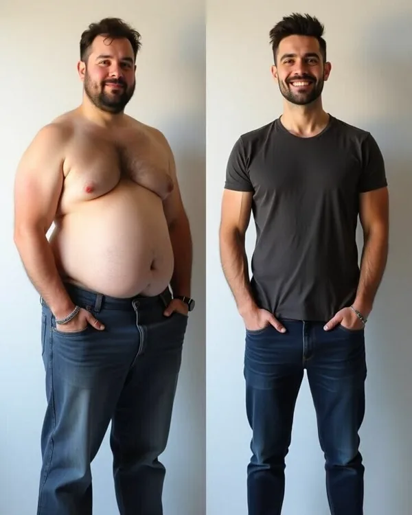

Поставил баллон, сбросил 20 кг — а вес вернулся. Почему?

Пациенты часто спрашивают, почему после удаления баллона вес возвращается. Это не случайность — и не «вина» баллона.
Баллон не лечит переедание и не заменяет спорт. Пока он стоит, он физически ограничивает объём пищи. После удаления старые привычки возвращаются: быстрые углеводы, мало движения, стресс и холодильник. Вес растёт, иногда выше исходного.
«Я снова набрал вес. Зачем я это делал?» — так пациенты нередко говорят через полгода после удаления баллона. Звучит жёстко, но это реальность большинства.
Баллон просто занимает место в желудке, чтобы человек физически меньше ел. Временно. Потом его убирают — и старые сценарии включаются снова.
Что реально работает после баллона
- Дробное питание малыми порциями — чтобы желудок не растягивался заново.
- Работа с психологом при эмоциональных срывах и переедании.
- Физическая активность — не только для похудения, но и для сохранения мышц.
- Регулярные визиты к врачу даже после удаления баллона: диета, поддержка, при необходимости препараты.
Баллон — инструмент, а не таблетка
Он даёт фору примерно на 6 месяцев, чтобы поменять образ жизни. Используете это время — результат остаётся. Нет — вес возвращается.
Баллон — это инструмент, как гаечный ключ: сам по себе он дом не построит. Он не даёт стройность на годы, но даёт время, чтобы изменить привычки. Что вы сделаете с этим временем — решает не баллон, а подход.
В следующей статье разберём, почему значительная часть пациентов набирает вес обратно и как этого избежать.
Ваш врач Гондусов Д.В.
Статья носит информационный характер и не заменяет консультацию врача. Не занимайтесь самодиагностикой.